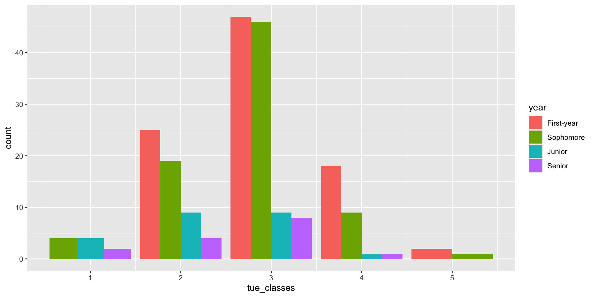
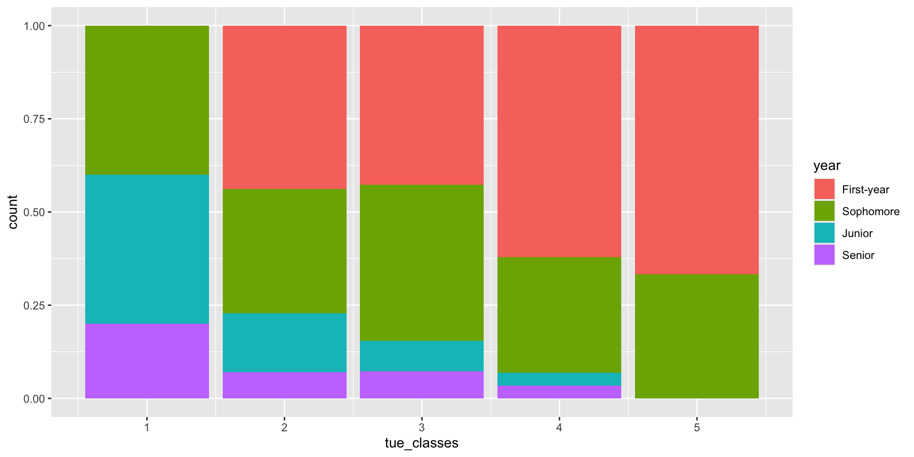

# A tibble: 6 × 2
x y
<dbl> <chr>
1 1 John
2 2 John
3 3 Cameron
4 4 Zito
5 5 Zito
6 6 Zito Data Science Wrap-up
Lecture 12
John Zito
Duke University
STA 199 Spring 2026
2026-02-23
That pesky midterm…
Midterm Exam 1
Worth 20% of your final grade; consists of two parts:
-
In-class: worth 70% of the Midterm 1 grade;
- Thursday February 20 11:45 AM - 1:00 PM
-
Take-home: worth 30% of the Midterm 1 grade.
- Released Thursday February 20 at 1:00 PM;
- Due Monday February 24 at 8:30 AM.
In-class
All multiple choice;
You will take it in Bio Sciences 111 (this room) or Physics 128;
You get both sides of one 8.5” x 11” note sheet that you and only you created (written, typed, iPad, etc);
If you do better on the final than you do on this, the final exam score will replace this.
Important
If you have testing accommodations, make sure I get proper documentation from SDAO and make appointments in the Testing Center by Friday. The appointment should overlap substantially with our class time if possible.
MISCONDUCT
Example in-class question
Which command will replace a pre-existing column in a data frame with a new and improved version of itself?
group_bysummarizepivot_widergeom_replacemutate
Example in-class question
Example in-class question
Which box plot is visualizing the same data as the histogram?


What should I put on my cheat sheet?
Ask one of our undergrad TAs! They took the class. I didn’t.
- description of common functions;
- description of different visualizations: how to interpret, and what to use when;
- doodles;
- cute words of affirmation.
Warning
Don’t waste space on the details of any specific applications or datasets we’ve seen (penguins, Bechdel, gerrymandering, midwest, etc). Anything we want you to know about a particular application will be introduced from scratch within the exam.
Take-home
- It will be just like a lab, only shorter;
- Completely open-resource, but citation policies apply;
- Absolutely no collaboration of any kind;
- Seek help by posting privately on Ed;
- Submit your final PDF to Gradescope in the usual way.
Reminder: conduct policies
- Uncited use of outside resources or inappropriate collaboration will result in a zero and be referred to the conduct office;
- If a conduct violation of any kind is discovered, your final letter grade in the course will be permanently reduced (A- down to B+, B+ down to B, etc);
- If folks share solutions, all students involved will be penalized equally, the sharer the same as the recipient.
It’s not personal.
These policies apply to everyone. I don’t care who your parents are, or what medical schools you are applying to in the fall. Grow up and act right.
Things you can do to study
- Practice problems: released Thursday February 13;
- Attend lab: review game on Monday February 17;
- Old labs: correct parts where you lost points;
- Old AEs: complete tasks we didn’t get to and compare with key;
- Code along: watch these videos specifically;
- Textbook: odd-numbered exercises in the back of Chs. 1, 4, 5, 6.
Let’s zoom out for a sec…
Data science and statistical thinking
Before Midterm 1…
- Data science: the real-world art of transforming messy, imperfect, incomplete data into knowledge;
After Midterm 1…
- Statistics: the mathematical discipline of quantifying our uncertainty about that knowledge.
Data science

Data science
-
Collection: we won’t seriously study this!
-
for us: data importing (
read_csv), and webscraping (next time); - but really: domain-specific issues of measurement, survey design, experimental design, etc;
-
for us: data importing (
From last time: data collection
I sent out my lil’ survey with Google Forms, downloaded the responses in a CSV, and read that sucker in:
# A tibble: 209 × 3
Timestamp How many classes do you have on Tues…¹ `What year are you?`
<chr> <chr> <chr>
1 2/6/2025 11:33:57 3 Sophomore
2 2/6/2025 11:37:39 3 First-year
3 2/6/2025 11:40:55 2 Senior
4 2/6/2025 11:42:05 3 First-year
5 2/6/2025 11:42:46 3 Senior
6 2/6/2025 11:43:28 3 Senior
7 2/6/2025 11:44:41 3 First-year
8 2/6/2025 11:44:49 3 First-year
9 2/6/2025 11:44:51 2 Sophomore
10 2/6/2025 11:44:51 3 Sophomore
# ℹ 199 more rows
# ℹ abbreviated name: ¹`How many classes do you have on Tuesdays?`Data science
-
Collection: we won’t seriously study this!
-
for us: data importing (
read_csv), and webscraping (next time); - but really: domain-specific issues of measurement, survey design, experimental design, etc;
-
for us: data importing (
-
Preparation: cleaning, wrangling, and otherwise tidying the data so we can actually work with it.
-
keywords:
mutate,fct_relevel,pivot_*,*_join
-
keywords:
From last time: data preparation
survey <- survey |>
rename(
tue_classes = `How many classes do you have on Tuesdays?`,
year = `What year are you?`
) |>
mutate(
tue_classes = case_when(
tue_classes == "2 -3" ~ "3",
tue_classes == "3 classes" ~ "3",
tue_classes == "Four" ~ "4",
tue_classes == "TWO MANY" ~ "2",
tue_classes == "Three" ~ "3",
tue_classes == "Two" ~ "2",
tue_classes == "Two plus a chemistry lab" ~ "3",
tue_classes == "three" ~ "3",
.default = tue_classes
),
tue_classes = as.numeric(tue_classes),
year = fct_relevel(year, "First-year", "Sophomore", "Junior", "Senior")
) |>
select(tue_classes, year)
survey# A tibble: 209 × 2
tue_classes year
<dbl> <fct>
1 3 Sophomore
2 3 First-year
3 2 Senior
4 3 First-year
5 3 Senior
6 3 Senior
7 3 First-year
8 3 First-year
9 2 Sophomore
10 3 Sophomore
# ℹ 199 more rowsData science
-
Collection: we won’t seriously study this!
-
for us: data importing (
read_csv), and webscraping (next time); - but really: domain-specific issues of measurement, survey design, experimental design, etc;
-
for us: data importing (
-
Preparation: cleaning, wrangling, and otherwise tidying the data so we can actually work with it.
-
keywords:
mutate,fct_relevel,pivot_*,*_join
-
keywords:
-
Analysis: finally transform the data into knowledge…
-
pictures:
ggplot,geom_*, etc -
numerical summaries:
summarize,group_by,count,mean,median,sd,quantile,IQR,cor, etc
-
pictures:
From last time: data analysis
A human being can learn nothing from staring at this box:
From last time: data analysis
Picture!

From last time: data analysis
Better picture?

From last time: data analysis
Numbers!
# A tibble: 17 × 4
# Groups: tue_classes [5]
tue_classes year n prop
<dbl> <fct> <int> <dbl>
1 1 Sophomore 4 0.4
2 1 Junior 4 0.4
3 1 Senior 2 0.2
4 2 First-year 25 0.439
5 2 Sophomore 19 0.333
6 2 Junior 9 0.158
7 2 Senior 4 0.0702
8 3 First-year 47 0.427
9 3 Sophomore 46 0.418
10 3 Junior 9 0.0818
11 3 Senior 8 0.0727
12 4 First-year 18 0.621
13 4 Sophomore 9 0.310
14 4 Junior 1 0.0345
15 4 Senior 1 0.0345
16 5 First-year 2 0.667
17 5 Sophomore 1 0.333 Data science
-
Collection: we won’t seriously study this!
-
for us: data importing (
read_csv), and webscraping (next time); - but really: domain-specific issues of measurement, survey design, experimental design, etc;
-
for us: data importing (
-
Preparation: cleaning, wrangling, and otherwise tidying the data so we can actually work with it.
-
keywords:
mutate,fct_relevel,pivot_*,*_join
-
keywords:
-
Analysis: finally transform the data into knowledge…
-
pictures:
ggplot,geom_*, etc -
numerical summaries:
summarize,group_by,count,mean,median,sd,quantile,iqr,cor, etc
-
pictures:
The pictures and the summaries need to work together!
A cautionary tale: Anscombe’s quartet
Dataset I
x y
1 10 8.04
2 8 6.95
3 13 7.58
4 9 8.81
5 11 8.33
6 14 9.96
7 6 7.24
8 4 4.26
9 12 10.84
10 7 4.82
11 5 5.68Dataset II
x y
1 10 9.14
2 8 8.14
3 13 8.74
4 9 8.77
5 11 9.26
6 14 8.10
7 6 6.13
8 4 3.10
9 12 9.13
10 7 7.26
11 5 4.74Dataset III
x y
1 10 7.46
2 8 6.77
3 13 12.74
4 9 7.11
5 11 7.81
6 14 8.84
7 6 6.08
8 4 5.39
9 12 8.15
10 7 6.42
11 5 5.73Dataset IV
x y
1 8 6.58
2 8 5.76
3 8 7.71
4 8 8.84
5 8 8.47
6 8 7.04
7 8 5.25
8 19 12.50
9 8 5.56
10 8 7.91
11 8 6.89A cautionary tale: Anscombe’s quartet

A cautionary tale: Anscombe’s quartet

If you only looked at summary statistics…
anscombe_tidy |>
group_by(set) |>
summarize(
xbar = mean(x),
ybar = mean(y),
sx = sd(x),
sy = sd(y),
r = cor(x, y)
)# A tibble: 4 × 6
set xbar ybar sx sy r
<chr> <dbl> <dbl> <dbl> <dbl> <dbl>
1 I 9 7.50 3.32 2.03 0.816
2 II 9 7.50 3.32 2.03 0.816
3 III 9 7.5 3.32 2.03 0.816
4 IV 9 7.50 3.32 2.03 0.817Our motto: ABV!
No, not alcohol by volume…
-
Always! -
Be! -
Visualizing!